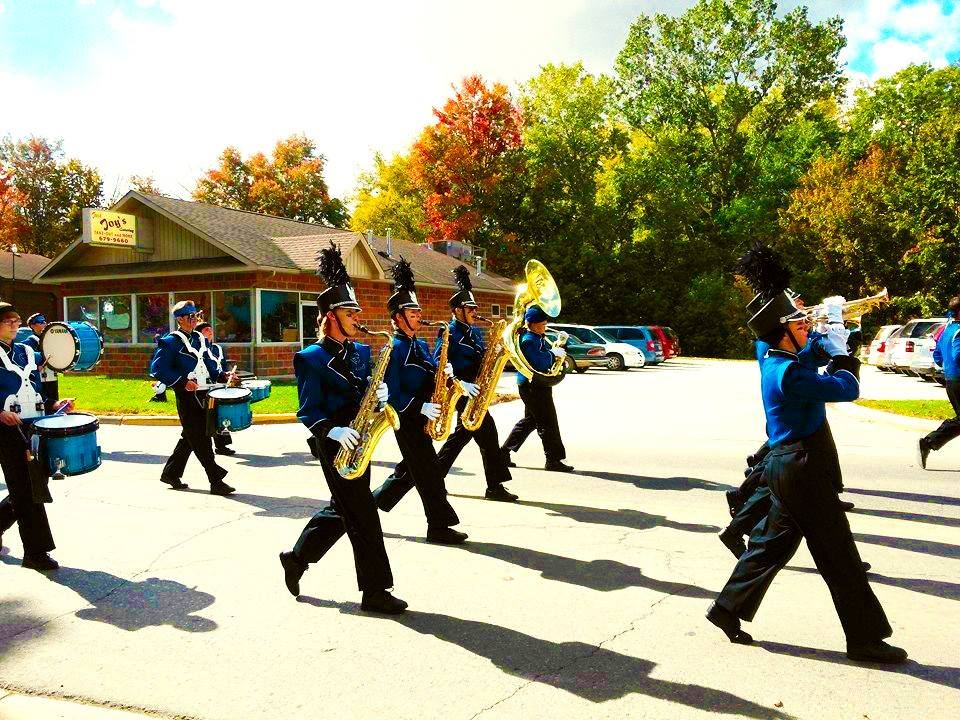

Technical Skills
- Amazon Web Services - Lambda
- API Usage (Including HTTP-key-authenticated and OAuth-authenticated)
- C / C++ (Basic)
- Git for Version Control
- HTML
- Natural Language Processing (Basic)
- Pandas
- Python
- PySpark
- Regular Expressions (Basic)
- Selenium Webdriver
- SQL / SQLite3 / T-SQL (Learning MySQL this semester)
- Web Crawler + Scraper Design
Currently-Learning (Technical Skills)
- CSS
- Django
- HTML
- JavaScript + JS Frameworks
- R
- Tableau
Nontechnical Skills
- English (Fluent)
- German (Intermediate)
- Mentorship
- Multitasking / Organization / Time Management
- Problem-Solving (Both Interpersonal and Technical)
- Written Communication
Interests & Hobbies
- Business
- CAD / 3D Modeling
- Crime
- Education
- Law
- Music
- Technology
- Psychology
- Video Games
University Bucketlist
- ✓ Become a Residential Advisor
- Reason: RA positions are very unique in how socially-immersive they are
- Achieved: Fall of Junior Year
- ✓ Intern in Research
-
Reason: Heavy exposure to research through courses seeded more professional curiousity and a desire
to get involved.
- ✓ Join the BSI Program
-
Reason: After taking both introductory Computer Science and Information Science/Systems courses,
I ultimately decided that the intersectional curriculum of the BSI was more personally compelling.
The courses, career outcomes, and department culture all
- ✓ Become a Teaching Aid (Ideally in a Programming-Focused Course)
- Reason: Interest in Programming Education, Personal Enjoyment of the Courses, "Giving Back"
- Join WolverineSoft
- Reason: Interest in Game Development Skills (Haven't been able to join yet due to schedule conflicts)
- Play the Burton Memorial Tower Grand Carillon
- Reason: Musical Geekery, Bell-Tower Enthusiasm, Unique Opportunity
-
The belltowers can be heard campus-wide and there are only 23 Grand Carillons in the world; two are on
University of Michigan's Ann Arbor campus. Students taking a course on the Carillon are able to play
carillons of campus belltowers at assigned times.
- Fun Fact: There are 23 Grand Carillons in the world; two are on University of Michigan's Ann Arbor campus.
- Graduate
Long-Term & Professional Aspirations
- ✓ Attend the University of Michigan
-
Reason: Best university in the state & I fell in love with it on a campus tour with A.P. English in high-school
- Find University-External Internship For Summer of 2019
-
Reason: I've had two research internships at the university, but want to experience interning elsewhere,
ideally in more data-science or software-engineering capacities.
- Find Full-Time Post-Graduate Employment
- Reason: This one is pretty self-explanatory
- Attend Graduate School (Still Debating Between Business, Legal, and Technological Programs)
- Reason: Intellectual Curiousity & Professional Opportunities
- Continue Learning German
- Reason: Love of Foreign Languages, Interest in German Culture
- Learn Russian
- Reason: Love of Foreign Languages, Interest in Eastern Europe
